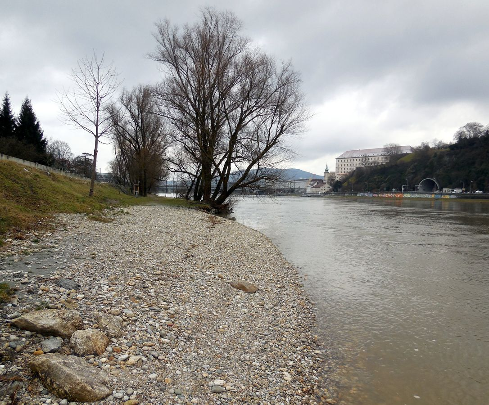

Linz Wiki sagt:

Im Jahr 2012 wurde erstmals das Ufern-Festival an und um diesen Badestrand durchgeführt. Durch das Hochwasser 2013 wurde der Strand stark in Mitleidenschaft gezogen. Ab dem Jahr 2015 übernimmt die Stadt Linz die Betreuung des Uferbereiches, um den Badestrand zu attraktivieren. Im Jänner/Februar 2016 wurde die Schotterbank erneuert. Dazu wurden auf einer Länge von rund 650 Metern rund 5.000 Tonnen Wasserbausteine als Fundament gesetzt und darauf rund 30.000 Kubikmeter Schotter aus der Donau platziert, um eine flache Sandbank zu schaffen. Dies soll sowohl den Badestrand als Naherholungsraum als auch einen Leich- und Lebensraum für Fische schaffen. Im April 2018 wurde die Schotterbank bis zur Schiffgasse verlängert.